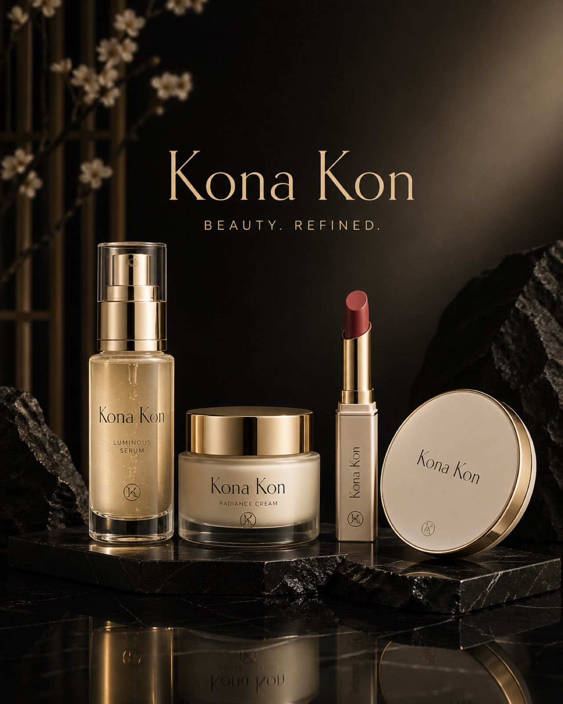
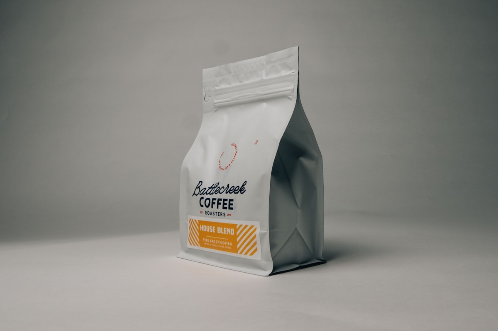
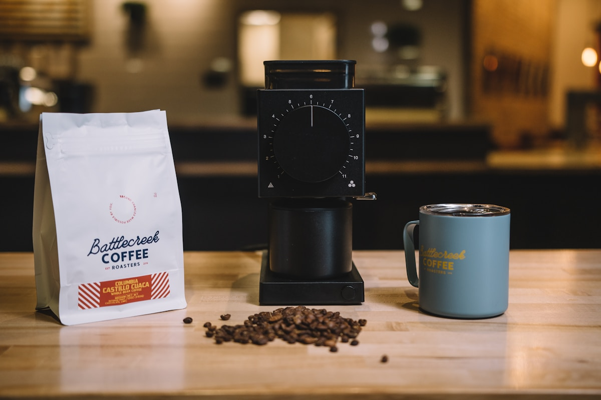
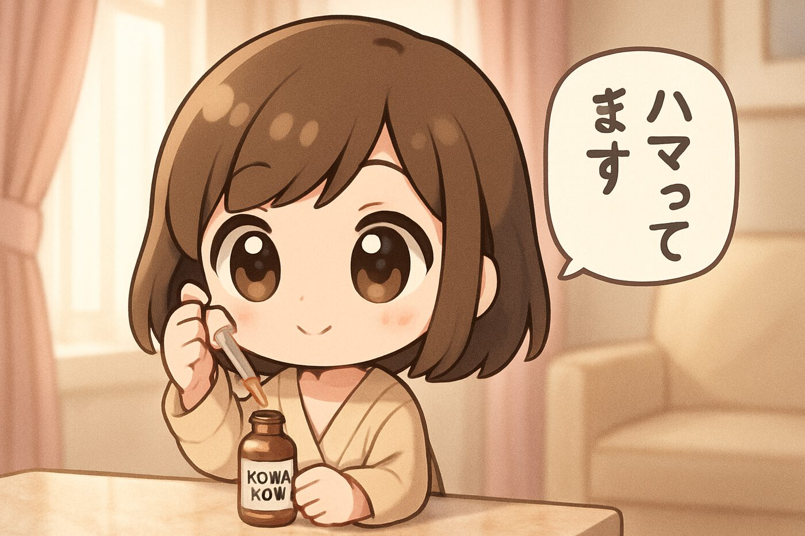

REASON 01
コーヒーの若葉に、
世界が驚いた。
沖縄・東村のコーヒーノキの新葉だけを、朝霧の中で手摘み。豆の数十倍※の総ポリフェノール量と、独自のクロロゲン酸が、整肌の手応えをもたらします。
※ 自社調べ（HPLC法・乾燥重量比）
実は、コーヒーチェリーの"若葉"には
豆の数十倍ものポリフェノールが宿る。
その若い力に、北海道の発酵酵母を重ねて。
※ 効果には個人差があります。お一人様一回限り。

— The Collection
エイジングケア美容液を中心に、デイリーに寄り添うフルライン。
すべてのアイテムに、コーヒーノキ若葉エキスを配合。
No.01 — SERUM
夜の集中ケア・40ml
¥28,000
No.02 — CREAM
朝晩のうるおいクリーム・50g
¥22,000
No.03 — LIP
薬用美容リップ・3.5g
¥6,800
No.04 — POWDER
ハイライト白粉・8g
¥9,800
※ 本ページでは「No.01 — Luminous Serum」のみのお申し込みを受け付けております。
— RECOGNITION & AWARDS —
COSMOPOLITAN 2025
@cosme 2025上半期
自社調査
※ 自社調べ（2025年1月～6月、30-50代女性 1,247名対象）
— Are you...?
そのお悩み、"若葉の栄養"が答えかもしれません。
— Introducing
従来のコーヒー由来コスメは、焙煎された"豆"を使うのが当たり前でした。
しかし、Kona Kon が目をつけたのは、まだ青々とした"若葉"。
最新研究で、若葉には豆の数十倍ものポリフェノールと、
アミノ酸・ビタミン類が宿ることが判明。北海道の発酵技術と組み合わせ、
30代以降の肌に届ける、新しい一滴が誕生しました。
※ コーヒーノキ葉エキス／整肌成分として / 自社調べ（豆との総ポリフェノール量比較）
— 3 Reasons
REASON 01
沖縄・東村のコーヒーノキの新葉だけを、朝霧の中で手摘み。豆の数十倍※の総ポリフェノール量と、独自のクロロゲン酸が、整肌の手応えをもたらします。
※ 自社調べ（HPLC法・乾燥重量比）
REASON 02
北海道・上川の老舗酒蔵から分けていただく蔵付き酵母を、低温で5週間じっくり発酵。生み出される短鎖ペプチドが、肌をやわらかく整えます。
※ 整肌成分として配合
REASON 03
使用1ヶ月後、97%の方が肌の"うるおい・ハリの印象"を実感※。"翌朝、化粧水の入りが違う"その感覚を、ぜひあなたの肌で。
※ 自社使用感アンケート n=215、効果には個人差があります
— Key Ingredients
INGREDIENT 01
COFFEA ARABICA YOUNG LEAF
沖縄・東村の自社農園で大切に育てるコーヒーノキの新葉だけを、夜明けの朝霧の中で一枚一枚手摘み。豆の数十倍もの総ポリフェノール量と、独自のクロロゲン酸を、低温水抽出でそのままに。

INGREDIENT 02
HOKKAIDO FERMENTED YEAST
北海道・上川の創業130年の老舗酒蔵から分けていただく蔵付き酵母。低温（10℃前後）で5週間かけてゆっくり発酵させ、生み出される短鎖ペプチドが、角層をやわらかく整え、肌のコンディションをサポートします。

INGREDIENT 03
JAPANESE MARINE COLLAGEN
北海道近海で獲れた天然魚由来のフィッシュコラーゲンを、独自の酵素分解で超低分子化（約500Da）。コーヒーノキ若葉エキスとの相乗で、ハリとうるおいの印象を、内側から後押しします。
※ 30日間返金保証付き / 定期縛りなし
— After 28 days

AFTER 28 days1日2回・28日後の使用感使用後、93% の方が「肌のうるおい・ハリの印象」を実感※。
※ 個人の感想であり、効果効能を保証するものではありません。
※ 自社使用感アンケート（2025年6月実施 / 30-50代女性 n=215）
— Daily Ritual
清潔な肌に、化粧水を浸透させてから。お風呂上がり直後がベストタイミングです。
体温で温めると、若葉の香りがふわりと広がります。深呼吸を一回。
頬・額・あご・首まで、軽く押し込むようにハンドプレス。気になる部分には重ねづけを。
美容液の有効成分を逃さないよう、最後に乳液で蓋をします。
— Expert Recommendation
コーヒー"豆"由来の美容成分は数多くありますが、"若葉"を主役にした処方は、私の知る限り Kona Kon が初めてです。新葉特有のクロロゲン酸組成と、北海道の発酵酵母との相乗は、エイジングケア領域における興味深い発見だと感じます。
皮膚科専門医・美容皮膚科クリニック院長 佐藤 晴美 氏
日本皮膚科学会 認定専門医 / 順天堂大学医学部 医学博士
— Customer Voice
フラダンスのレッスンで毎日汗だくです。以前は夕方の肌の"くすみ印象"が気になっていましたが、Kona Kon を朝晩使うようになって2ヶ月。レッスン後の鏡を見るのが楽しみになりました。
認証済み購入 / 60日間使用美容液はべたつくものという印象がありましたが、これは本当に軽い。ほんのりコーヒー若葉の香りも上品で、お風呂上がりの一滴が至福の時間に。化粧水のあとすぐ使えて、その後の乳液とも相性◎
認証済み購入 / 28日間使用毎朝コーヒーを淹れる時間が好きで、"葉"由来というところに惹かれて購入。敏感肌でも刺激なく使えて、香りもやさしい。北海道発酵酵母というストーリーも、毎晩のケアを"儀式"にしてくれます。
認証済み購入 / 28日間使用SK-II も DECENCIA も試しました。ブランドを比較して、自分に合うのは"自然由来×日本の素材"だと気づき、Kona Kon へ。お値段はそれなりですが、初回65%OFFと返金保証で安心して始められました。
認証済み購入 / 90日間使用
※ 個人の感想であり、効果効能を保証するものではありません。
※ 掲載のお声は実際にご購入されたお客様より、ご本人の許諾を得て掲載しております。
— FEATURED IN —
— FAQ
通常価格 ¥28,000 → 初回限定 ¥9,800（税込・送料無料）
※ ¥9,800は初回お一人様1回限り。次回以降は20%OFFの¥22,400となります。
— Order Flow
STEP 01
下のフォームからお名前・ご住所等をご入力（約1分）
STEP 02
ご注文内容のご確認メールを自動送信いたします
STEP 03
ヤマト運輸ネコポスでお届け（送料無料）
STEP 04
お届け後すぐにご使用いただけます
— Order Form
下のフォームに必要事項をご入力の上、送信ボタンを押してください。
※ 本サイトは "薬事法ドットコム" 推奨表現ガイドラインに準拠し、景品表示法・特定商取引法・個人情報保護法を遵守して運営しています。